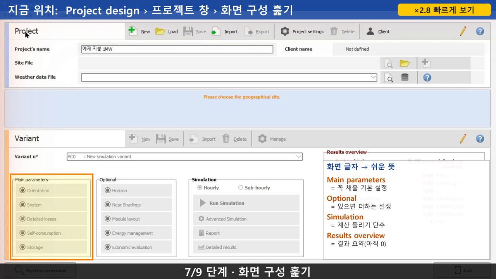
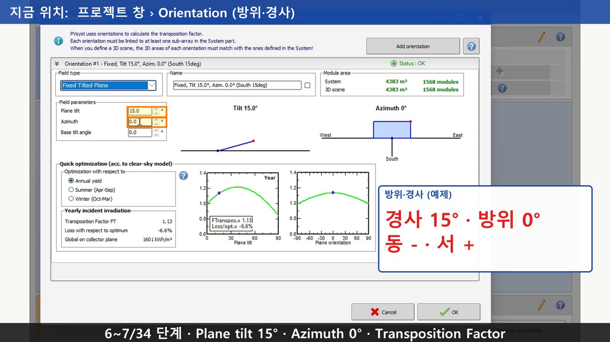
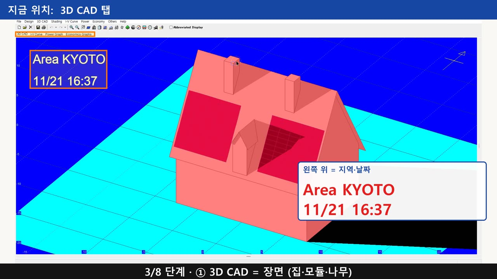
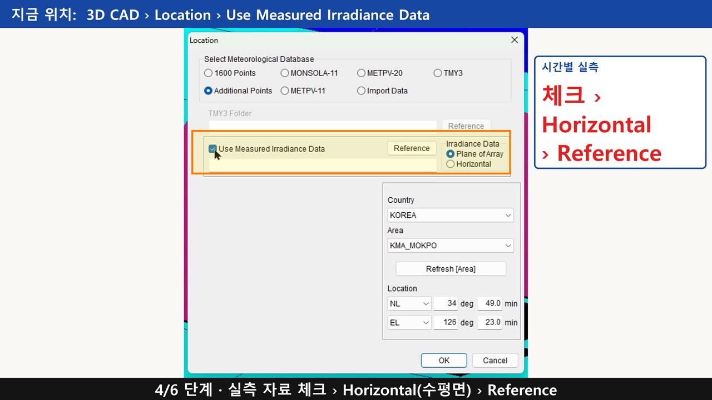

PVsyst · 쏠라프로 강의
발전량 시뮬레이션 프로그램 두 가지를 화면 하나씩 따라 하는 무료 강의입니다. 강의마다 요약, 화면 메뉴, 핵심 숫자, 자주 묻는 질문을 정리했습니다.
PVsyst 제대로 쓰기
발전량 시뮬레이션 프로그램 PVsyst를 첫 화면부터 보고서까지 한 강에 한 화면씩 따라 합니다. 예제는 1강부터 같이 쓰는 가상의 '예제 지붕 1MW'입니다.

1강 · 1분 40초첫 화면 설정
PVsyst를 처음 열었을 때 Grid-Connected, 새 프로젝트, 프로젝트 이름, Variant…
 2강 · 3분 11초
2강 · 3분 11초기상 자료
PVsyst 기상 파일 표에서 PVGIS 연 수평면 일사 1,412.7 kWh/㎡와 기상청 평년값에 맞춘…

3강 · 5분 53초방위·경사·수평선
PVsyst Orientation 창에서 경사 15°를 0°·30°·40°로, 방위를 ±30°로 바꿔…
 4강 · 3분 36초
4강 · 3분 36초모듈 PAN 파일
PVsyst 모듈 PAN 파일에서 정격 출력·허용차, Voc·Isc, Vmp·Imp, 셀 구조, 온도계수,…
준비 중: 5강 인버터와 직렬 수, 6강 병렬 수와 DC/AC 비, 7강 손실 입력 칸, 8강 시뮬레이션 결과 읽기, 9강 손실 다이어그램, 10강 보고서 PDF, 11강 변형으로 비교하기. 유튜브에 하루 한 편씩 올리고, 올린 편부터 이 목록에 더합니다.
쏠라프로 제대로 쓰기
모듈 한 장씩 그늘을 계산하는 쏠라프로(Solar Pro 4.8)를 기초부터 따라 합니다. 2강에서 만든 가상의 목포 평지 발전소 97.2 kW를 계속 씁니다.

1강 · 2분 9초첫 화면 네 창
쏠라프로(Solar Pro 4.8) 첫 화면의 3D CAD, I-V 곡선, 발전량, 경제성 네 창과 그늘을…
 2강 · 2분 25초
2강 · 2분 25초마법사 다섯 단계
쏠라프로 마법사(Wizard) 다섯 단계로 지역, 모듈과 용량, 설치 형태, 줄과 간격, 경사와 결선을…

3강 · 1분 41초기상 자료 고르기
쏠라프로 Location 창에서 월평균 기상 지점과 시간별 실측 CSV(8,760시간)를 고르는 법, 같은…
 4강 · 2분 36초
4강 · 2분 36초건물·나무·지평선
쏠라프로에서 그늘을 만드는 건물(꼭짓점 시계 방향), 나무(높이·반지름), 지평선 표를 넣고, 지평선 방위…
준비 중: 5강 그림자 눈으로 보기, 6강 결선, 7강 I-V 곡선과 그림자 지도, 8강 1년 발전량과 보고서, 9강 그림자 계산 조건, 10강 모듈·인버터 직접 넣기. 유튜브에 하루 한 편씩 올리고, 올린 편부터 이 목록에 더합니다.
심화 과정 맛보기
쏠라프로 실전 프로젝트 1 (심화, 준비 중)
공장 지붕 619 kWp 한 현장을 3D 장면(건물 36동, 지붕 설비, 먼 산 48점)부터 동지 그림자, 그늘 진 모듈과 결선, 1년 발전량, PVsyst 교차 검증, 고객 보고서까지 10강으로 만듭니다. 예제는 실제 현장 이름과 주소, 지번을 뺀 강의용 판입니다. 맛보기 영상과 전체 강의는 공개되면 이곳과 유튜브 채널에 알려 드립니다.